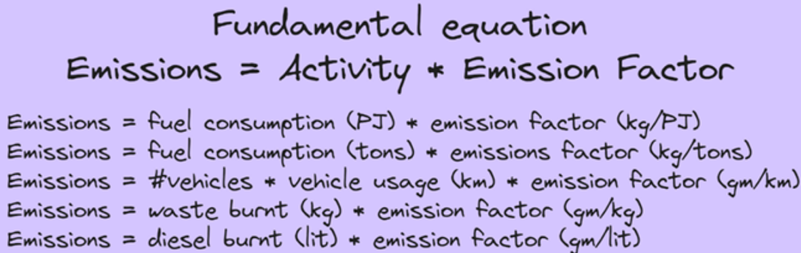
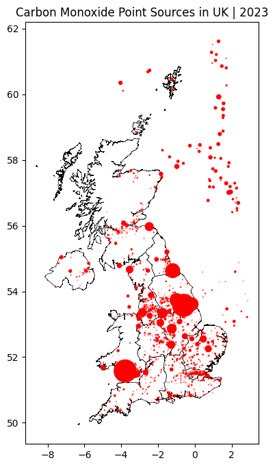

In the previous tutorial, we learnt that one way to perform a source apportionment study in a city is the bottom-up Emissions modeling way. In this tutorial, we will learn how to build an emission inventory for a city.
7.1 What are emissions?
Across this course we have dealt with data on pollutant concentrations, whose units are in µg/m3 or ppm. Concentration is thus the amount of pollutant present in unit volume of ambient air that we are breathing.
On the other hand, Emissions is the amount of pollutant directly emitted by a source. These sources could be vehicles, waste burning, biomass burning, etc., that we saw in the previous tutorial. The units of Emissions are thus in kgs or tonnes per day.
There is a simple equation that helps us calculate emissions from any source.
\[ Emissions = Activity * Emission Factor \]
For each source, \(Activity\) could be defined differently. 1. For Transport, it could be number of litres of fuel burnt, or number of kilometres travelled by vehicles. 2. For Waste Burning, it is the amount of waste burnt.
\(Emission Factor\) is the amount of emissions released per unit activity. These factors vary for each source and activity. They are determined through lab-experiments and field studies. We can find emission factors of required pollutant from literature.

emissions_equation.png
Each pollutant of interest would have an \(Emission Factor\) for each \(Activity\)
7.1.1 Example:
A city has 20,000 vehicles. Average speed of vehicles is 20 kmph. The Carbon Monoxide CO) Emission Factor is 2.7 g/km. What is the Emission Rate of CO in this city?
Here, we will define \(Activity\) as Kilometres travelled per hour. When we multiply that \(Activity\) with the given \(Emission Factor\), we would obtain Emission Rate in grams per hours (g/hr).
num_vehicles =20000avg_speed =20#kmphactivity = num_vehicles * avg_speed #km per hourprint(f"Vehicular activity: Vehicles in the city travelled {activity} km per hour")co_ef =2.7#g/kmemission_rate = activity * co_ef #g per hourprint(f"Emission Rate: Vehicles in the city emit {emission_rate/1000} kilograms of CO per hour")
Vehicular activity: Vehicles in the city travelled 400000 km per hour
Emission Rate: Vehicles in the city emit 1080.0 kilograms of CO per hour
Thus we have calculated the emission rate of Carbon Monoxide (CO) from all vehicles in the city. If we repeat this exercise for all other sources, we would build the CO Emission Inventory for the city and also identify all the sources of CO.
7.2 UK’s National Atmospheric Emissions Inventory (NAEI)
A few countries developed such Emission Inventories for various pollutants. The complexity of emission inventories depends upon the granularity of the emissions data. In the above example, we calculated CO emissions for the entire city. But with better datasets, we could calculate it for each 1 sq.km grid in the city. This is what the UK’s National Atmospheric Emissions Inventory (NAEI) achieved.
import geopandas as gpdco_point_sources = gpd.read_file('data/naei23_co_2023/point_sources_layer/point_sources_CO_2023.shp')co_point_sources.sample(5)
Year
PollID
Poll_Name
PlantID
Site
Easting
Northing
Operator
SectorID
Sector
Emission
Unit
Country
Datatype
geometry
1419
2023
4
Carbon Monoxide
11059
Ferrybridge
447940.0
425500.0
Lafarge Plasterboard Ltd
4
Other mineral industries
11.346540
Tonnes
England
M
POINT (447940 425500)
1272
2023
4
Carbon Monoxide
9647
Grangemouth
291649.0
681450.0
Dalkia Plc
10
Chemical industry
8.373685
Tonnes
Scotland
M
POINT (291649 681450)
2605
2023
4
Carbon Monoxide
43248
Equus UK Topco Limited
509265.0
431660.0
Equus UK Topco Limited
10
Chemical industry
3.091166
Tonnes
England
M
POINT (509265 431660)
1303
2023
4
Carbon Monoxide
9751
East Kilbride
261059.0
654957.0
Coca-Cola Enterprises Ltd
5
Food, drink & tobacco industry
7.703571
Tonnes
Scotland
M
POINT (261059 654957)
1562
2023
4
Carbon Monoxide
11918
Hill of Tramaud Generating Station
395290.0
813494.0
Sita Holding UK Ltd
22
Construction
6.847015
Tonnes
Scotland
O
POINT (395290 813494)
co_point_sources.Sector.unique()
array(['Mechanical engineering', 'Non-ferrous metal industries',
'Waste collection, treatment & disposal', 'Chemical industry',
'Other industries', 'Electrical engineering',
'Paper, printing & publishing industries',
'Processing & distribution of petroleum products',
'Food, drink & tobacco industry', 'Vehicles', 'Miscellaneous',
'Water & sewerage', 'Lime', 'Cement', 'Other mineral industries',
'Textiles, clothing, leather & footwear', 'Commercial',
'Processing & distribution of natural gas',
'Oil & gas exploration and production', 'Iron & steel industries',
'Other fuel production', 'Major power producers',
'Minor power producers', 'Public administration',
'Agriculture, forestry & fishing', 'Construction'], dtype=object)
We can see that it is a detailed information on how many tonnes of CO emitted by each point source in 2023. We can plot these points on a map with the size of the point representing the amount of emissions.
Show hidden code that plots CO point sources
import matplotlib.pyplot as pltuk = gpd.read_file('data/uk_regions.geojson')fig, ax = plt.subplots(figsize=(8,8))uk.plot(ax=ax, color="white", edgecolor="black", linewidth=0.5)co_point_sources.to_crs(uk.crs).plot(ax=ax, markersize=co_point_sources['Emission']/50, color='red')plt.title('Carbon Monoxide Point Sources in UK | 2023')plt.show()

This point sources emission information is then distributed to each 1 sq.km grid in UK using specialised models. This is called Gridded Emissions Data and they are made available in TIFF format.
Show hidden code that plots the CO Gridded Emissions TIFF file
import rasterioimport numpy as npimport matplotlib.pyplot as pltimport matplotlib.colors as mcolorsfrom rasterio.plot import showimport geopandas as gpd# Load TIFFtif_path ="./data/naei23_co_2023/GeoTIFF_layers/totalco23_2023.tif"with rasterio.open(tif_path) as src: co = src.read(1) # first band co = np.where(co == src.nodata, np.nan, co) # mask nodata extent = [src.bounds.left, src.bounds.right, src.bounds.bottom, src.bounds.top] crs = src.crs# Load admin boundaries — reproject to match raster CRSuk = gpd.read_file('data/uk_regions.geojson').to_crs(crs)# Plotfig, ax = plt.subplots(figsize=(7, 7))im = ax.imshow( co, extent=extent, cmap='YlOrRd', origin='upper', vmin=np.nanpercentile(co, 2), # clip outliers vmax=np.nanpercentile(co, 98),)# Admin boundary overlayuk.boundary.plot(ax=ax, linewidth=0.5, color='black')plt.colorbar(im, ax=ax, label='CO (tonnes)')ax.set_title('CO Gridded Emissions - UK - 2023')plt.axis('off')plt.tight_layout()#plt.savefig('co_griddedemissions.png', dpi=150, bbox_inches='tight')plt.show()
The UK’s NAEI created a portal to explore such gridded emissions of each pollutant. You can check it out here: UK Emissions Interactive Map
7.3 Summary
In this tutorial, we learnt how to calculate amount of emissions of a pollutant by each source using the fundamental equation of \(Activity * Emission Factor\). We then explored the UK’s National Atmospheric Emissions Inventory (NAEI) and learnt about Gridded Emissions Datasets.